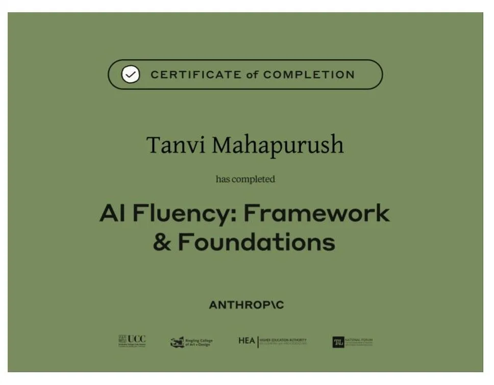

Software Engineering Job Simulation
Completed the JPMorgan Chase & Co. Software Engineering Job Simulation on Forage.
Showcasing my learning journey through certifications.
Completed the JPMorgan Chase & Co. Software Engineering Job Simulation on Forage.

Completed the Anthropic's AI Fluency:Frameworks & Foundations